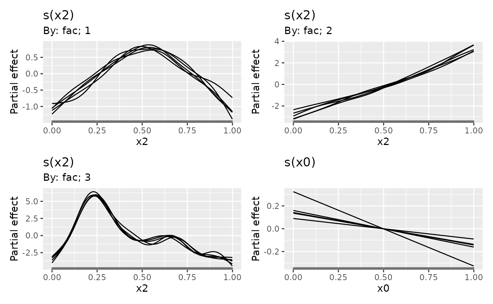

Returns draws from the posterior distributions of smooth functions in a GAM. Useful, for example, for visualising the uncertainty in individual estimated functions.
Usage
smooth_samples(model, ...)
# S3 method for class 'gam'
smooth_samples(
model,
select = NULL,
term = deprecated(),
n = 1,
data = newdata,
method = c("gaussian", "mh", "inla", "user"),
seed = NULL,
freq = FALSE,
unconditional = FALSE,
n_cores = 1L,
n_vals = 200,
burnin = 1000,
thin = 1,
t_df = 40,
rw_scale = 0.25,
rng_per_smooth = FALSE,
draws = NULL,
partial_match = NULL,
mvn_method = c("mvnfast", "mgcv"),
...,
newdata = NULL,
ncores = NULL
)Arguments
- model
a fitted model of the supported types
- ...
arguments passed to other methods. For
fitted_samples(), these are passed on tomgcv::predict.gam(). Forposterior_samples()these are passed on tofitted_samples(). Forpredicted_samples()these are passed on to the relevantsimulate()method.- select
character; select which smooth's posterior to draw from. The default (
NULL) means the posteriors of all smooths inmodelwil be sampled from. If supplied, a character vector of requested terms.- term
![[Deprecated]](figures/lifecycle-deprecated.svg) Use
Use selectinstead.- n
numeric; the number of posterior samples to return.
- data
data frame; new observations at which the posterior draws from the model should be evaluated. If not supplied, the data used to fit the model will be used for
data, if available inmodel.- method
character; which method should be used to draw samples from the posterior distribution.
"gaussian"uses a Gaussian (Laplace) approximation to the posterior."mh"uses a Metropolis Hastings sampler that alternates t proposals with proposals based on a shrunken version of the posterior covariance matrix."inla"uses a variant of Integrated Nested Laplace Approximation due to Wood (2019), (currently not implemented)."user"allows for user-supplied posterior draws (currently not implemented).- seed
numeric; a random seed for the simulations.
- freq
logical;
TRUEto use the frequentist covariance matrix of the parameter estimators,FALSEto use the Bayesian posterior covariance matrix of the parameters.- unconditional
logical; if
TRUE(andfreq == FALSE) then the Bayesian smoothing parameter uncertainty corrected covariance matrix is used, if available.- n_cores
number of cores for generating random variables from a multivariate normal distribution. Passed to
mvnfast::rmvn(). Parallelization will take place only if OpenMP is supported (but appears to work on Windows with currentR).- n_vals
numeric; how many locations to evaluate the smooth at if
datanot supplied- burnin
numeric; number of samples to discard as the burnin draws. Only used with
method = "mh".- thin
numeric; the number of samples to skip when taking
ndraws. Results inthin * ndraws from the posterior being taken. Only used withmethod = "mh".- t_df
numeric; degrees of freedom for t distribution proposals. Only used with
method = "mh".- rw_scale
numeric; Factor by which to scale posterior covariance matrix when generating random walk proposals. Negative or non finite to skip the random walk step. Only used with
method = "mh".- rng_per_smooth
logical; if TRUE, the behaviour of gratia version 0.8.1 or earlier is used, whereby a separate call the the random number generator (RNG) is performed for each smooth. If FALSE, a single call to the RNG is performed for all model parameters
- draws
matrix; user supplied posterior draws to be used when
method = "user".- partial_match
logical; should smooths be selected by partial matches with
select? IfTRUE,selectcan only be a single string to match against.- mvn_method
character; one of
"mvnfast"or"mgcv". The default is usesmvnfast::rmvn(), which can be considerably faster at generate large numbers of MVN random values thanmgcv::rmvn(), but which might not work for some marginal fits, such as those where the covariance matrix is close to singular.- newdata
Deprecated: use
datainstead.- ncores
Deprecated; use
n_coresinstead. The number of cores for generating random variables from a multivariate normal distribution. Passed tomvnfast::rmvn(). Parallelization will take place only if OpenMP is supported (but appears to work on Windows with currentR).
Value
A tibble with additional classes "smooth_samples" and
`"posterior_samples".
For the "gam" method, the columns currently returned (not in this order)
are:
.smooth; character vector. Indicates the smooth function for that particular draw,.term; character vector. Similar tosmooth, but will contain the full label for the smooth, to differentiate factor-by smooths for example..by; character vector. If the smooth involves abyterm, the by variable will be named here,NA_character_otherwise..row; integer. A vector of valuesseq_len(n_vals), repeated ifn > 1L. Indexes the row indatafor that particular draw..draw; integer. A vector of integer values indexing the particular posterior draw that each row belongs to..value; numeric. The value of smooth function for this posterior draw and covariate combination.xxx; numeric. A series of one or more columns containing data required for the smooth, named as per the variables involved in the respective smooth.Additional columns will be present in the case of factor by smooths, which will contain the level for the factor named in
by_variablefor that particular posterior draw.
Warning
The set of variables returned and their order in the tibble is subject to change in future versions. Don't rely on position.
Examples
load_mgcv()
dat <- data_sim("eg1", n = 400, seed = 2)
m1 <- gam(y ~ s(x0) + s(x1) + s(x2) + s(x3), data = dat, method = "REML")
sms <- smooth_samples(m1, select = "s(x0)", n = 5, seed = 42)
# \donttest{
sms
#> # A tibble: 1,000 x 8
#> .smooth .term .type .by .row .draw .value x0
#> <chr> <chr> <chr> <chr> <int> <int> <dbl> <dbl>
#> 1 s(x0) s(x0) TPRS NA 1 1 -0.357 0.00711
#> 2 s(x0) s(x0) TPRS NA 1 2 -0.465 0.00711
#> 3 s(x0) s(x0) TPRS NA 1 3 -0.720 0.00711
#> 4 s(x0) s(x0) TPRS NA 1 4 -1.27 0.00711
#> 5 s(x0) s(x0) TPRS NA 1 5 -1.18 0.00711
#> 6 s(x0) s(x0) TPRS NA 2 1 -0.365 0.0121
#> 7 s(x0) s(x0) TPRS NA 2 2 -0.464 0.0121
#> 8 s(x0) s(x0) TPRS NA 2 3 -0.708 0.0121
#> 9 s(x0) s(x0) TPRS NA 2 4 -1.24 0.0121
#> 10 s(x0) s(x0) TPRS NA 2 5 -1.16 0.0121
#> # i 990 more rows
# }
## A factor by example (with a spurious covariate x0)
dat <- data_sim("eg4", n = 1000, seed = 2)
## fit model...
m2 <- gam(y ~ fac + s(x2, by = fac) + s(x0), data = dat)
sms <- smooth_samples(m2, n = 5, seed = 42)
draw(sms)
